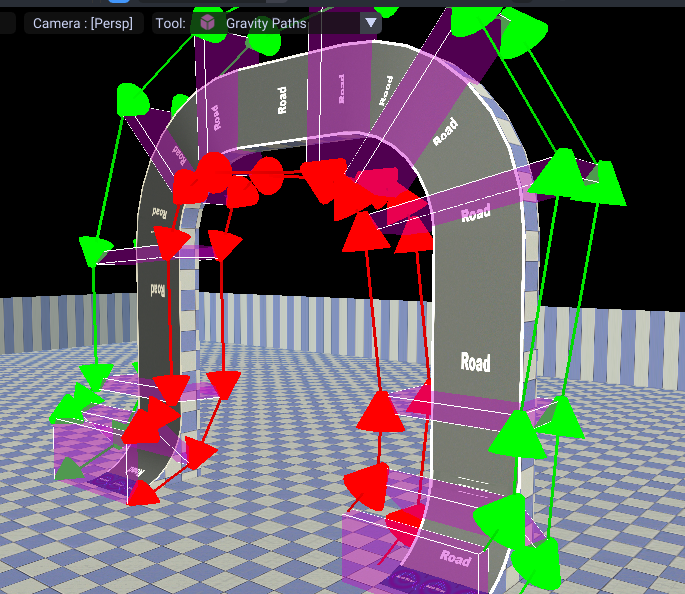
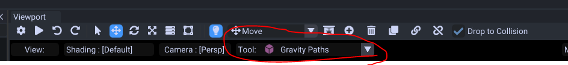
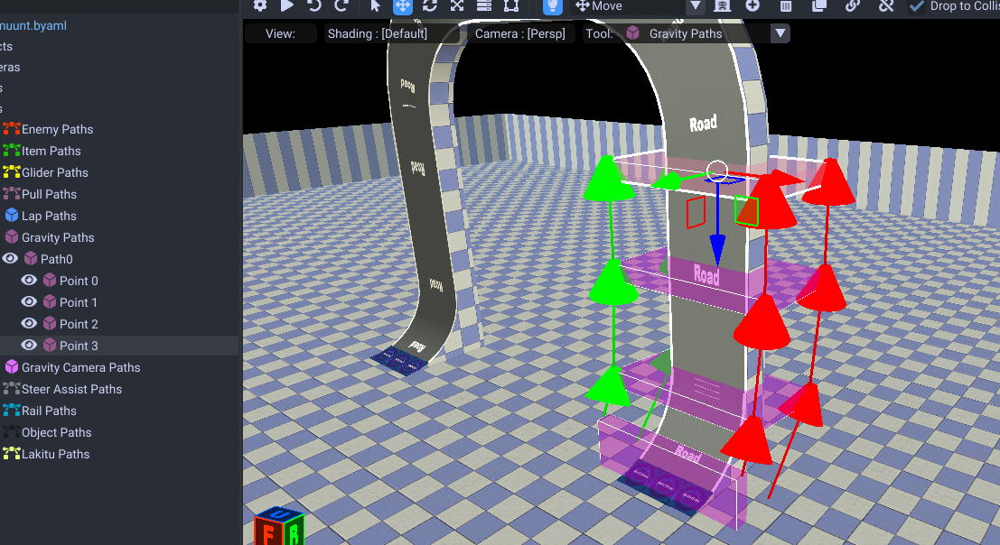
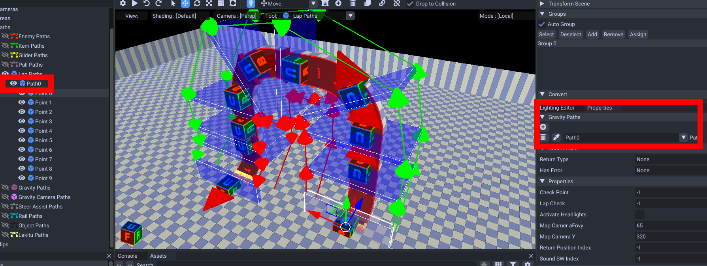
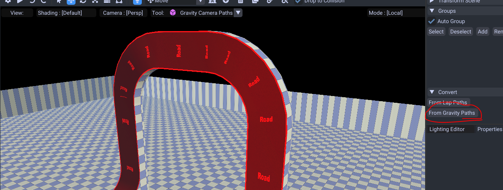
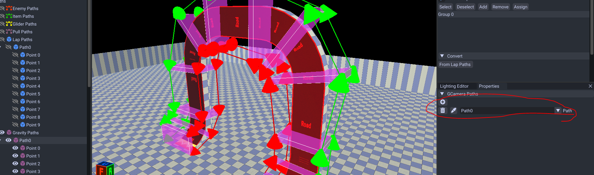
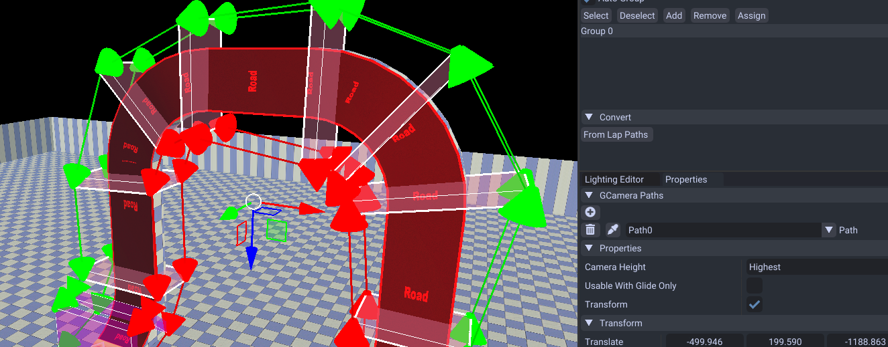
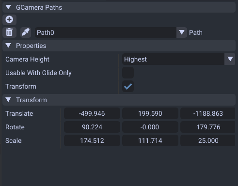

Gravity Paths
These paths are for controlling anti gravity. If the player is inside the region it activates. The direction these are facing determine the direction of gravity.

Shortcuts
| Shortcuts | Effect |
|---|---|
| Ctrl + D | Duplicate |
| Alt + Mouse Down | Add points. If one is selected it connects to that. |
| Del | Delete |
| Q | Also can add points. |
| E | Extrude |
| F | Connect/Disconnect 2 selected points |
| 1 | Activates movement tool |
| 2 | Activates rotation tool |
| 3 | Activates scale tool |
| G | Move |
| R | Rotate |
| T | Scale |
| X | Lock X Axis |
| Y | Lock Y Axis |
| Z | Lock Z Axis |
| B | Selection Box |
Creation
To start you want to enter the gravity path editor.

Then Alt + Mouse to create. Ctrl + D to duplicate and keep creating these to fill the region you want as anti gravity.

After these are made, make sure you put all the lap path groups these are inside of.

This is required for these to activate.
Now that is done you can create Gravity Camera Paths. They control the camera angle. These you can convert from the gravity paths you just made.

Make sure you assign them aswell by selecting the gravity path and adding the camera path.

Camera Height/Angle
You can increase the camera angle/height a bit with this property.

This helps if you are driving on slopes and need the height to show at a higher angle.
Properties

| Name | Effect |
|---|---|
| GCamera Paths | The camera paths to use to determine the camera angle of the anti gravity section. |
| Camera Height | 3 different height levels to determine how to angle the camera height. |
| Transform | Determines to activate anti gravity. This should always be on. |